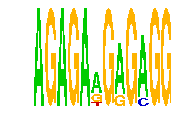

family_7 |
|---|
|  |
| Download PWM |
| Download instances (motifs) |
| Show motif distribution |
Query_ID | Query_Consensus | Subject_Name | Source_DB | Subject_ID | Length | Orientation | Offset | Divergence | Overlap | Subject_Consensus |
|---|---|---|---|---|---|---|---|---|---|---|
| family_7 | AGAGAAGAGAGG | RGAGGAARY | JASPAR | PF0050 | 9 | as given | 7 | 0.417 | 5 | AGAGGAAGT |
| family_7 | AGAGAAGAGAGG | WCTCNATGGY | JASPAR | PF0059 | 10 | reverse-complement | -5 | 0.753 | 5 | TCTCYATGGT |
Sequence | Start_position (from start) | Start_position (from end) | Average conservation | Best conservation score | Instance_with_best_CS | Best_Z-score | Instance_with_best_ZS | Strand |
|---|---|---|---|---|---|---|---|---|
| chr14:105988338-105989338 | 866 | 878 | 0.997833 | 1 | AGAGAAGRGMGG | 16.767979 | AGAGARGAGMGG | 1 |
| chr1:189831052-189832052 | 88 | 100 | 0.997833 | 1 | AGAGAAGRGMGG | 16.767979 | AGAGARGAGMGG | 1 |
| chr14:31218715-31219715 | 475 | 487 | 0.00166667 | 0.003 | AGAGAWGRGAGG | 16.767979 | AGAGARGAGMGG | 1 |
| chr14:32704390-32705390 | 977 | 989 | 0.00183333 | 0.012 | AGAGAWGRGAGG | 16.767979 | AGAGARGAGMGG | 1 |
| chr17:71349448-71350448 | 302 | 314 | 0.0131667 | 0.034 | AGAGAAGRGMGG | 16.767979 | AGAGAWGRGAGG | 1 |
| chr18:36072324-36073324 | 402 | 414 | 0.359333 | 0.626 | AGAGARGAGMGG | 20.804438 | AGAGAAGRGMGG | 1 |
| chr1:74285954-74286954 | 100 | 112 | 0.00408333 | 0.014 | AGAGAWGRGAGG | 16.767979 | AGAGAWGRGAGG | 1 |
| chr5:77131508-77132508 | 308 | 320 | 0.108417 | 0.172 | AGAGARGAGMGG | 16.767979 | AGAGARGAGMGG | 1 |
| chr1:120878036-120879036 | 833 | 845 | 0.00466667 | 0.01 | AGAGARGAGMGG | 16.767979 | AGAGARGAGMGG | -1 |
| chr13:117087152-117088152 | 709 | 721 | 0.000333333 | 0.002 | AGAGAWGRGAGG | 16.767979 | AGAGAWGRGAGG | 1 |
| chr8:49238756-49239756 | 560 | 572 | 0.986833 | 1 | AGAGARGAGMGG | 16.767979 | AGAGARGAGMGG | -1 |
| chr13:72429464-72430464 | 422 | 434 | 0.0544167 | 0.175 | AGAGAWGRGAGG | 20.804438 | AGAGAAGRGMGG | 1 |
| chr12:21432030-21433030 | 656 | 668 | 0.0250833 | 0.101 | AGAGARGAGMGG | 16.767979 | AGAGARGAGMGG | 1 |
| chr11:34820169-34821169 | 971 | 983 | 0.00875 | 0.042 | AGAGARGAGMGG | 16.767979 | AGAGAWGRGAGG | 1 |